France
France
Bœuf
Côte de bœuf
Persillée, découpée à l'épaisseur voulue. Grill, plancha ou four.

La boucherie-charcuterie de la famille Délice à Manosque : viandes françaises, préparations maison et charcuterie halal, servies avec le sourire 7 jours sur 7 dès 8h.
Avenue du Majoral Raoul Arnaud, la Boucherie Délice est le comptoir de proximité de la famille : découpe à la demande, conseils de cuisson et préparations maison.
Agneau, bœuf et veau d'origine France, volailles, merguez et brochettes marinées : commandez vos pièces pour l'Aïd, les fêtes ou vos barbecues, on s'occupe du reste.
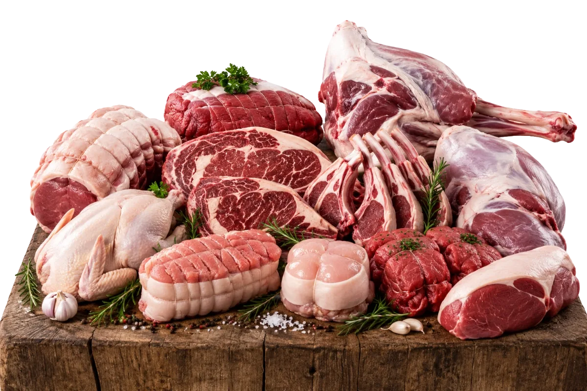
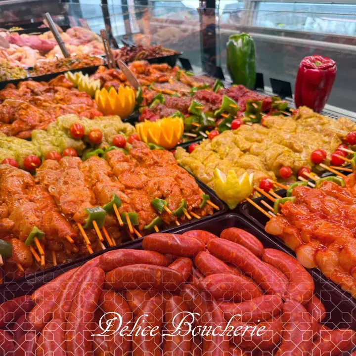
Un aperçu de notre étal : découpe à la demande et conseils de nos bouchers, en boutique.
FrancePersillée, découpée à l'épaisseur voulue. Grill, plancha ou four.
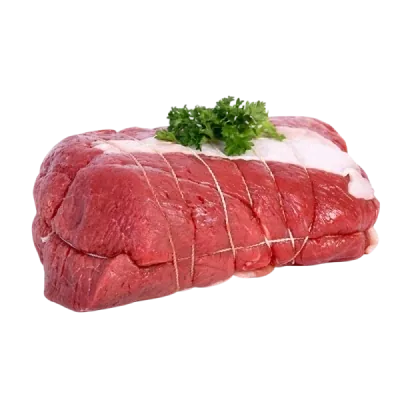
FrancePréparé et ficelé par nos bouchers.
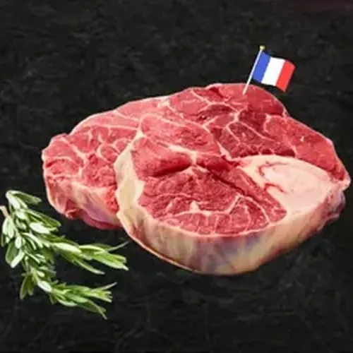
FrancePour pot-au-feu, tajines et mijotés.
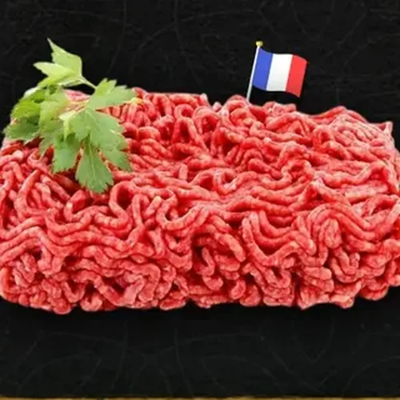
FranceHachée minute, idéale kefta et bolognaise.
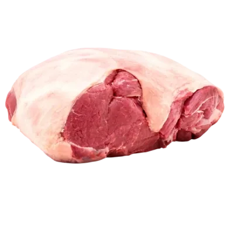
FranceRumsteck ou faux-filet, tendre et maigre.
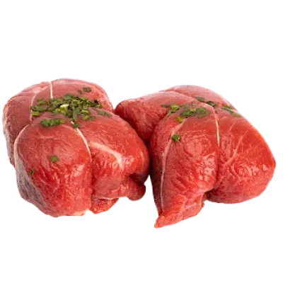
FranceCœur de filet bardé, pour les grandes occasions.
 France
FranceEntier ou en tranches, la pièce reine des fêtes.
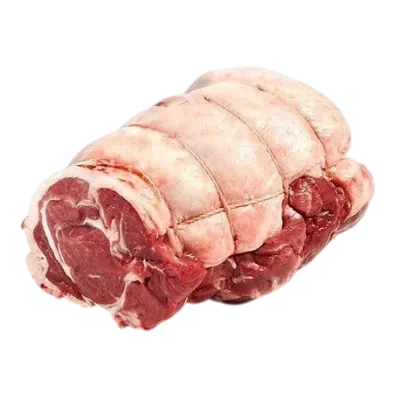
FrancePrêt à rôtir, facile à trancher.
 France
FranceFondante en cuisson lente, parfaite au four.
 France
FranceLe classique du barbecue.
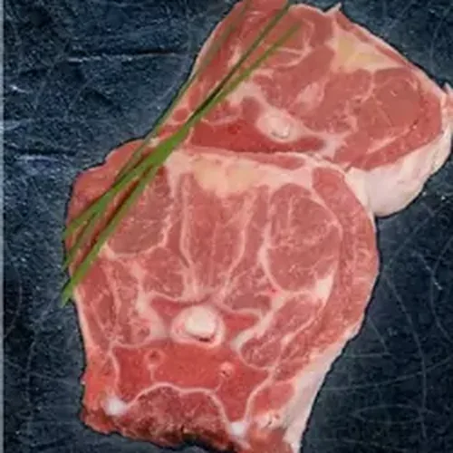
FrancePour couscous et tajines.
 France
FranceBardé et ficelé, tendre et savoureux.
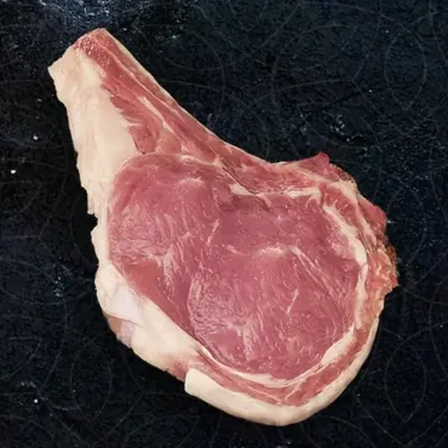
FranceÉpaisse et nacrée, à la poêle.
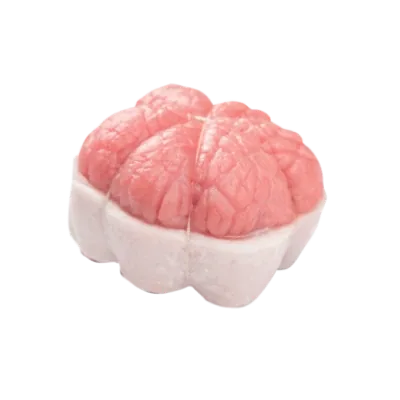
FrancePréparation maison, prêt à enfourner.
 Europe
EuropePrêt à cuire, entier ou découpé à la demande.
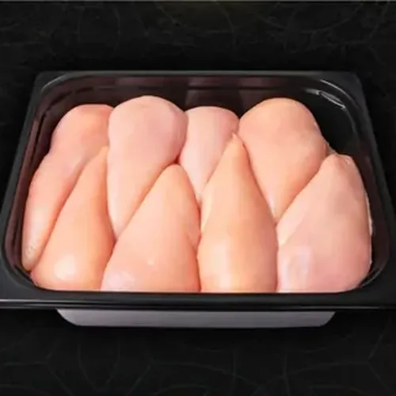
EuropeBarquette de 2,5 kg.
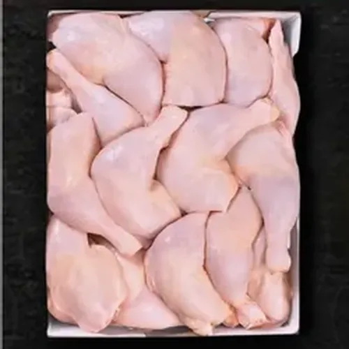
EuropeCarton de 10 kg, idéal familles et grandes tablées.
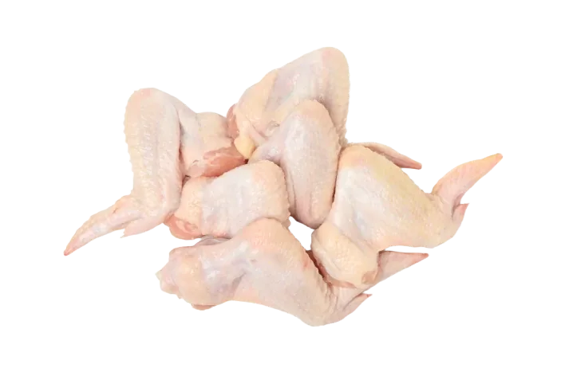
EuropeÀ mariner pour le four ou le barbecue.
 Europe
EuropeFarci maison, prêt à cuire.
 Europe
EuropeChair fine, à rôtir entière.
 Europe
EuropeÀ saisir côté peau, rosé à cœur.
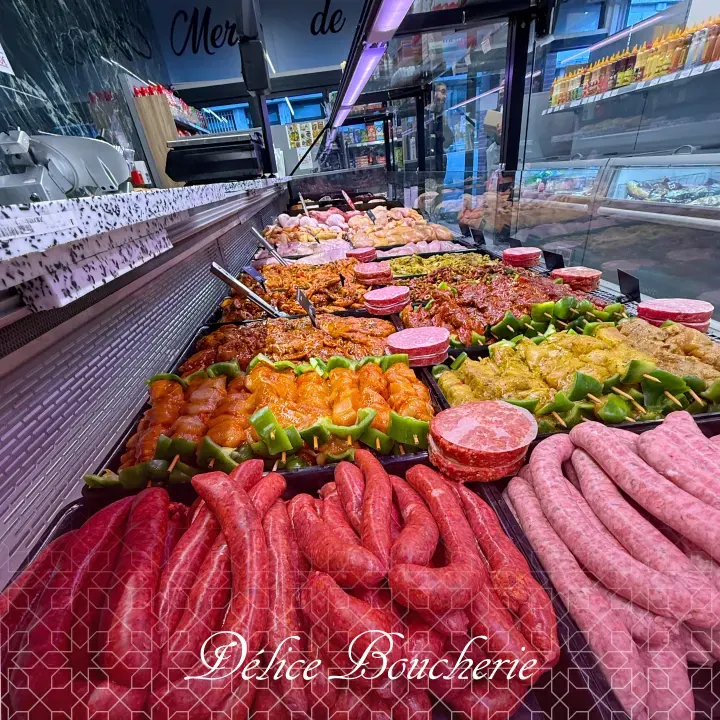
MaisonRecettes de nos bouchers, préparées chaque jour.
Poulet, bœuf ou agneau, marinades maison.
MaisonAssortiment sur mesure : merguez, brochettes, côtelettes.
★★★★★« Dimanche, j'ai réservé un poulet rôti par téléphone, pris à 11h30. Nous nous sommes régalés ! L'étal de viande était tellement beau que j'ai pris un assortiment de brochettes de poulet. Je recommande les yeux fermés. »
★★★★★« De passage pour 2 semaines en camping à Digne : brochettes, bavettes, côte de bœuf à des prix très abordables, avec une qualité de service irréprochable. »
★★★★★« Wahoo la propreté, les rayons bien rangés. Une vitrine à ne plus savoir quoi choisir. Une viande excellente à prix abordable et des bouchers souriants. Ça manquait à Digne-les-Bains. »
| Lundi | 8h – 19h |
| Mardi | 8h – 19h |
| Mercredi | 8h – 19h |
| Jeudi | 8h – 19h |
| Vendredi | 8h – 19h |
| Samedi | 8h – 19h |
| Dimanche | 8h – 19h |
Recevez chaque semaine nos offres & nouveautés directement par e-mail ou SMS.